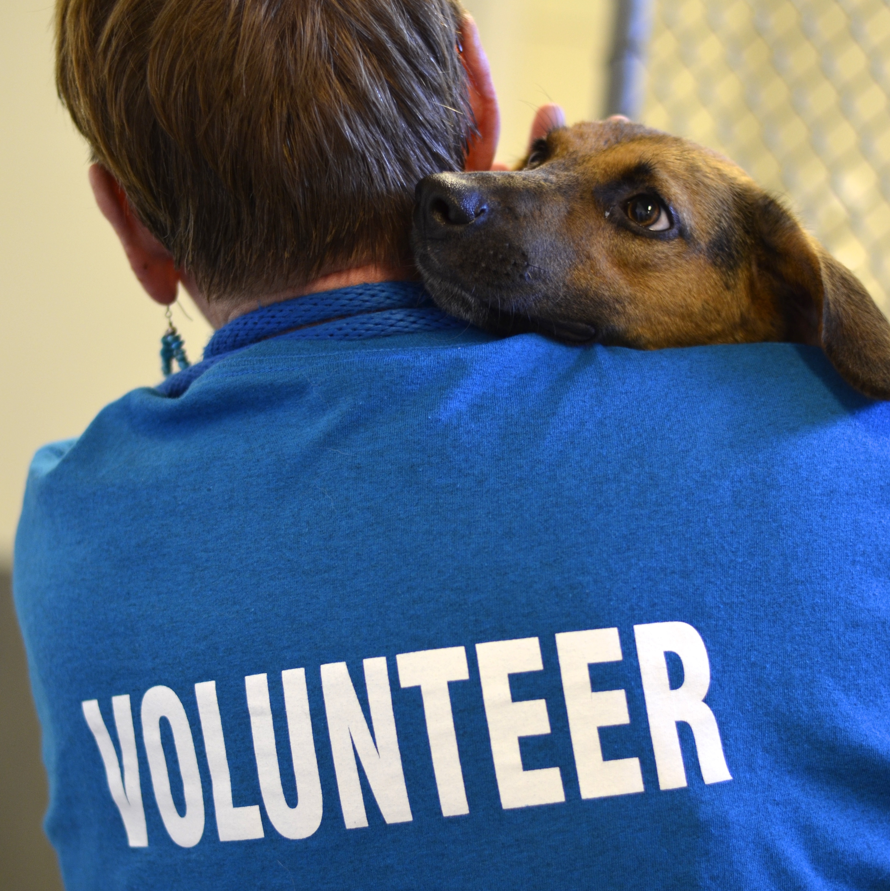

Volunteer Opportunities
A few notes:
- You must be 18 to volunteer, or with a parent or guardian at all times to be a volunteer.
- The shelter is open to the volunteers EVERYDAY as the animals need to be cared for EVERYDAY!!
- You may volunteer between the hours of 8-4 daily.
- If you feel uncomfortable with an animal, DO NOT feel obligated to walk, or take it to the play yard, or play room, each and every animal will be given their time to play throughout the day.
- HAVE FUN!
THANK YOU TO ALL THE NEW VOLUNTEERS WHO CAME OUT, CAN’T WAIT TO SEE YOU ALL AT THE SHELTER FOR LOTS OF VOLUNTEERING FUN!
Certified Volunteers:
- Must Attend an Orientation- Held on 3rd Thursday of each month at the Mt. Pleasant Animal Shelter.
- Must be 18 years of age, any minors MUST be accompanied by their parent or guardian (no exceptions)!
- Must be mentored by one of our approved volunteers prior to your first time volunteering.
- Can follow all signs as directed by staff at the shelter.
Community Service:
Those needing to fill community service hours may do so without attending volunteer training. They will not be allowed to come in contact with the animals and may volunteer without a parent present if they are under 18. It is recommended that those filling community service hours arrive at 8 a.m. and be prepared to sweep, mop or do dishes.
- If it is school community service, students will need to bring paperwork.
- For court-ordered community service, visit the Mt Pleasant Police Department to receive necessary paper work.